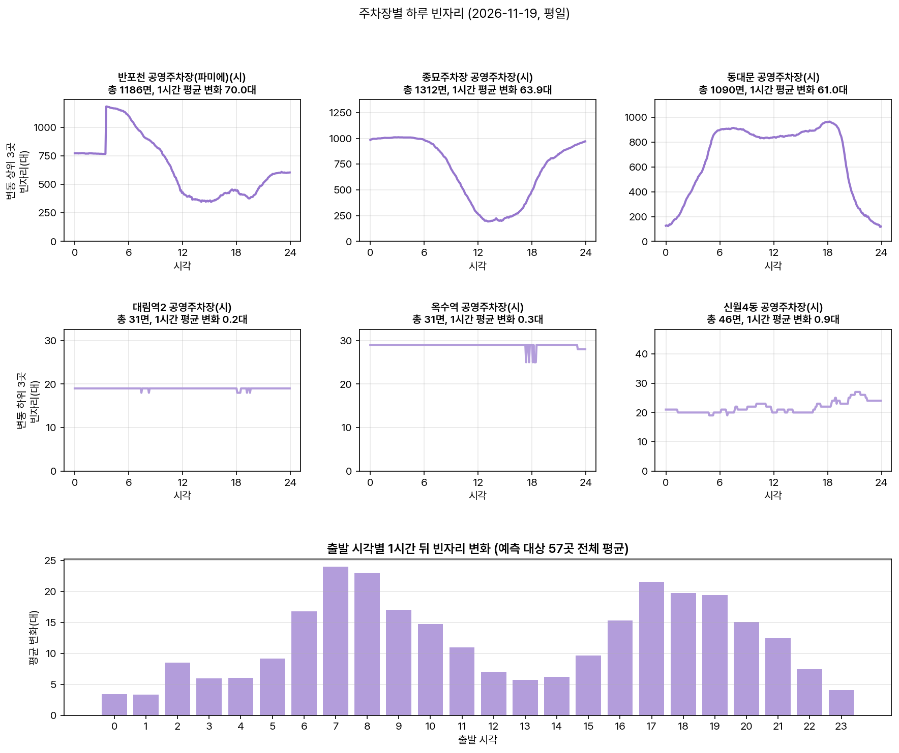
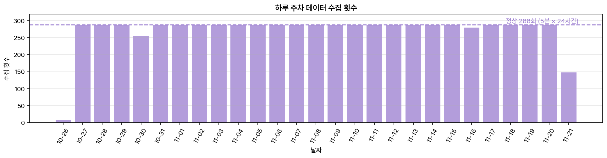
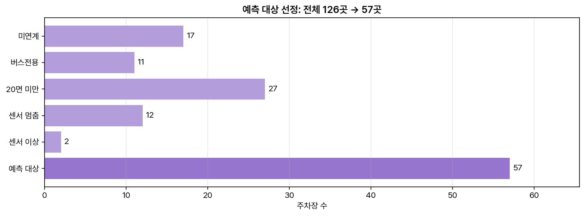
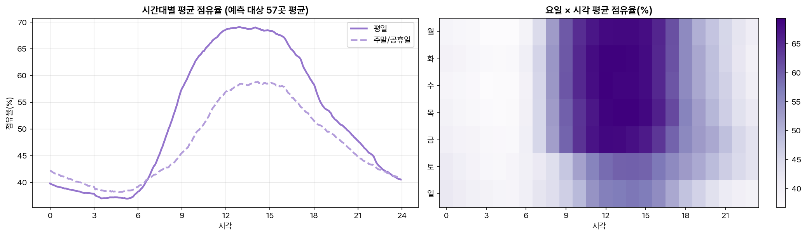
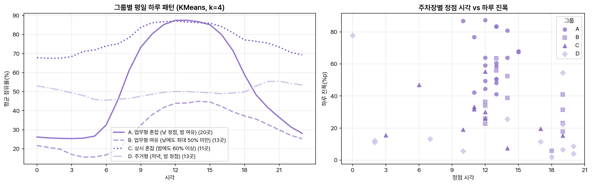
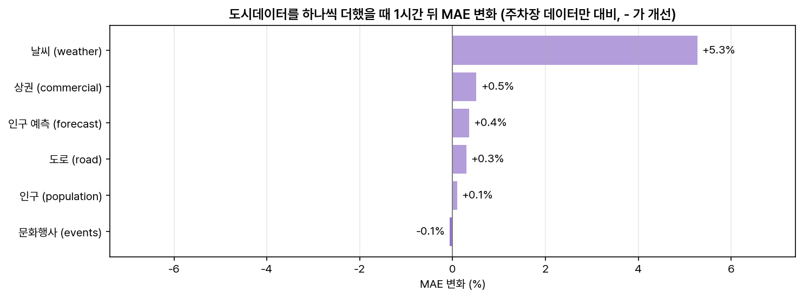
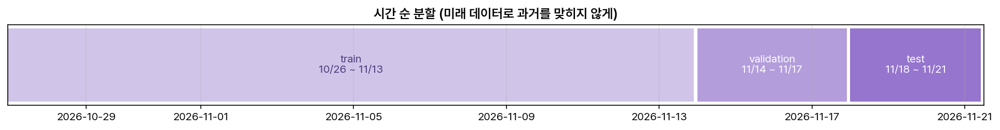
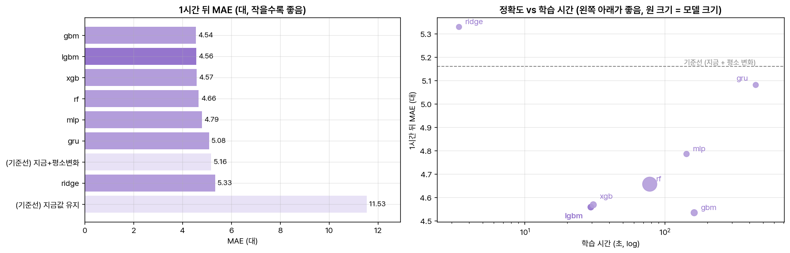
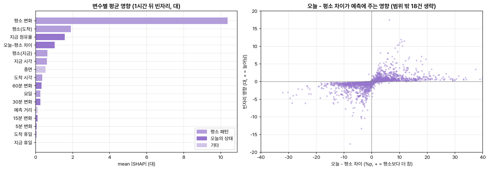
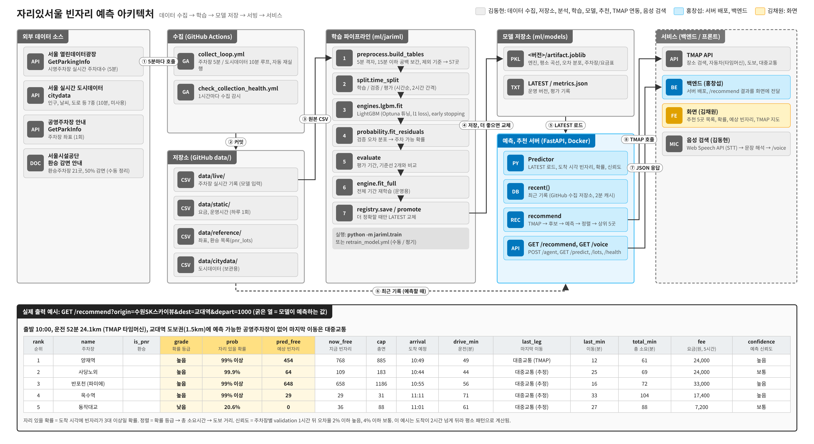

목적지에 도착할 시점에, 자리가 있을까?
서울 공영주차장 빈자리 예측
Arrival-Time Parking Availability Prediction for Seoul Public Parking Lots
Abstract
서울시 공영주차장 정보는 현재 빈자리만 제공하므로, 1시간 뒤 도착하는 운전자에게는 평균 12대의 오차가 생긴다. 본 연구는 서울 열린데이터광장 실시간 API를 25.6일간 5분 간격으로 수집(892,544 rows)하고, 공영주차장 57곳의 도착 시점 빈자리를 예측한다. Time series decomposition 결과 점유율 분산의 98.7%는 weekday와 offday를 분리한 daily seasonality와 weekly seasonality로 설명되며, 남은 residual은 half-life 3시간 20분의 autocorrelation을 가진다. 이 구조를 seasonal profile과 deviation feature로 모델링하고, 9개 모델 benchmark를 거쳐 LightGBM을 선정했다. Hold-out test에서 1시간 뒤 MAE는 3.63대(capacity 대비 2.26%)로 persistence 대비 70%, seasonal naive 대비 16% 감소했으며, walk-forward validation 4개 fold 모두에서 개선이 확인되었다. 모델은 TMAP routing과 결합해 2~5초 안에 목적지 주변 주차장 5곳을 추천한다.
Keywords: parking availability, time series forecasting, gradient boosting, LightGBM, seasonal decomposition, probabilistic forecasting
1. Introduction
서울시가 제공하는 현재 빈자리를 57곳의 5분 단위 기록에서 1시간 뒤 실제 빈자리와 비교한 결과, 평균 12.0대의 차이가 발생하고 전체의 23.6%는 10대 이상 차이가 나므로, 도착 시점의 빈자리 예측이 필요하다.
운전자에게 필요한 정보는 현재 빈자리가 아니라 도착 시각의 빈자리다. 예측 대상 57곳 전체에서 현재 빈자리를 도착 시점까지 그대로 사용할 때의 오차를 계산했다 (Table 1).
| Horizon | Mean absolute change | Change ≥ 10 cars |
|---|---|---|
| 30 min | 6.4 | 15.2% |
| 1 h | 12.0 | 23.6% |
| 2 h | 22.6 | 33.6% |

오차는 7시 출발에서 24.0대로 최대이며, 출퇴근 시간대에 집중된다. 본 연구의 목표는 5분 ~ 2시간 horizon의 빈자리와 availability probability를 예측해 이 오차를 줄이는 것이다.
2. Data Collection
실시간 API가 과거 이력을 제공하지 않아 25.6일간 5분 간격으로 자체 수집하였으며, 수집 성공률은 99.3%이다.
서울시 실시간 API는 과거 이력을 제공하지 않으므로, GitHub Actions scheduler로 직접 수집했다 (Table 2, 3).
| Data | Source | Interval | Usage |
|---|---|---|---|
| Real-time parking occupancy | Seoul Open Data, GetParkingInfo | 5 min | Model input |
| Lot metadata (fee, hours) | Seoul Open Data | Daily | Preprocessing, fee |
| Lot coordinates | Seoul Open Data, GetParkInfo | Once | Candidate search |
| City data, 7 types (population, forecast, weather, road, commercial, events, parking) | Seoul Open Data, citydata | 10 min | Ablation only (4.5) |
| Park-and-ride lots (21, 50% discount) | Seoul Facilities Corporation | Manual | Recommendation, fee |
| Item | Value |
|---|---|
| Period | 10/26 22:40 ~ 11/21 12:15 (25.6 days) |
| Collection runs | 7,312 / 7,364 scheduled (99.3%) |
| Longest gap | 160 min (10/30, once) |
| Lots / raw rows | 126 / 892,544 |

3. Data Preprocessing
3.1 Lot Selection
신뢰도 기준에 미달하는 69곳을 제외하고, 공영주차장 57곳을 예측 대상으로 확정하였다.
신뢰할 수 없는 시계열을 rule-based filter로 제외해 126곳 중 57곳을 예측 대상으로 정했다 (Table 4).
| Criterion | Lots | Rule |
|---|---|---|
| Not linked | 17 | 실시간 연계 없음 |
| Bus only | 11 | 일반 승용차 이용 불가 |
| Small capacity | 27 | capacity < 20 |
| Stuck sensor | 12 | median daily occupancy range < 3%p |
| Abnormal sensor | 2 | unique values < 4 |
| Target lots | 57 |

3.2 Missing Value Handling
결측률은 0.71%이며, 15분 이하의 결측만 선형 보간하여 데이터 왜곡을 최소화하였다.
5분 grid(time × lot) 419,748칸 중 missing은 2,964칸(0.71%)이다. 15분 이하 gap 855칸만 linear interpolation으로 채우고, 나머지 2,109칸(0.50%)은 imputation 없이 결측으로 유지했다.
3.3 Data Schema
점유율 시계열, 주차장 정보, 요금 규칙의 3개 테이블을 주차장 코드로 연결한 구조이다.

3.4 Data Quality Issues
10개 주차장에서 집계 초기화가 53회 확인되었으며, 이는 일부 주차장의 주요 오차 요인이다.
- Counter reset: 5분 안에 capacity의 30% 이상 변한 경우가 10곳에서 53회 관측되었다. 반포천은 21회로 새벽 집계 초기화로 추정된다 (전체 칸의 0.01%).
- Small-lot near-stuck sensor: 31면 주차장은 1대 변화가 3.2%p로 stuck sensor 기준을 통과한다. 일부 소형 주차장(대림역2, 옥수역)은 하루 1~2대만 변한다.
4. Exploratory Data Analysis
4.1 Temporal Patterns
평일 점유율은 12시 55분에 최고치(69.1%)에 이르며, 주말·공휴일은 최고치가 10.2%p 낮고 75분 늦게 나타난다.
| Weekday | Offday (weekend, holiday) | |
|---|---|---|
| Peak | 69.1% (12:55) | 58.9% (14:10) |
| Trough | 37.0% (05:15) | 38.2% (04:40) |

Offday의 peak는 weekday보다 10.2%p 낮고 75분 늦다. 야간에도 약 37%가 점유되어 있어 overnight parking 비중이 크다.
4.2 Time Series Decomposition
점유율 변동의 98.7%는 평일과 주말·공휴일을 구분한 일간 주기 및 주간 주기로 설명된다.
57곳 전체 점유율 \(y_t = \sum_i n_{i,t} / \sum_i c_i\)를 Prophet [2]으로 분해했다.
$$y_t = T(t) + S_{\text{daily}}^{(d_t)}(t) + S_{\text{weekly}}(t) + H(t) + \varepsilon_t, \qquad d_t \in \{\text{weekday}, \text{offday}\}$$| Model | p | R² | Adjusted R² | Residual MAE | Residual std |
|---|---|---|---|---|---|
| Single daily seasonality | ≈ 41 | 93.72% | 93.68% | 2.83%p (448 cars) | 3.74%p |
| Conditional daily seasonality | ≈ 74 | 98.72% | 98.71% | 1.18%p (186 cars) | 1.69%p |
\(R^2_{adj} = 1 - (1 - R^2)\frac{n-1}{n-p-1}\), \(n\) = 7,327. \(p\) = trend changepoints 25 + Fourier terms + weekly + holiday. Prophet은 prior로 regularization되므로 유효 파라미터 수는 이보다 작고, 위 값은 보수적 추정이다.

Weekday의 daily amplitude는 42.9%p, offday는 28.6%p이며, 하나의 daily seasonality로 묶으면 residual MAE가 2.4배 커진다. 수집 기간에 공휴일이 없어 \(H(t)=0\)이다.
Prophet의 seasonality는 Fourier series로 표현되므로, 분해와 독립적으로 FFT power spectrum을 계산했다. 선형 detrend 후 Parseval 정리로 frequency \(k\)의 variance share를 \(2|X_k|^2 / (N^2 \sigma^2)\)로 구했다.
| Period | Component | Share |
|---|---|---|
| 24 h | Daily fundamental | 66.8% |
| 28 h | Sideband (1/24 − 1/168) | 6.5% |
| 168 h | Weekly fundamental | 6.3% |
| 12 h | Daily 2nd harmonic | 4.3% |
| 21 h | Sideband (1/24 + 1/168) | 3.6% |
| 34 h | Sideband (1/24 − 2/168) | 2.1% |

28 h, 21 h 성분은 실제 주기가 아니라 daily amplitude가 weekly로 변조되어 생기는 sideband다 (\(1/(1/24 \mp 1/168) = 28.0, 21.0\) h). 즉 FFT가 Prophet과 독립적으로 weekday / offday의 daily shape 차이를 확인한다. Least squares harmonic regression에서 daily Fourier order는 \(K=4\)에서 포화되며, 같은 \(K\)에서 weekday / offday 분리만으로 R²가 85.1%에서 99.2%로 증가한다 (\(K=4\), \(p=25\), \(n=7{,}364\)에서 adjusted R² 99.24%). 파라미터 수 증가가 아니라 구조 차이로 인한 개선이다.
4.3 Residual Analysis
주기 패턴으로 설명되지 않는 당일의 편차는 반감기 3시간 20분으로 지속되어, 수 시간 뒤 예측에 유효한 정보가 된다.
Conditional Prophet의 residual \(\varepsilon_t\)는 평소 대비 오늘의 deviation이다.
| Statistic | Value | Lag | ACF |
|---|---|---|---|
| MAE | 1.17%p (185 cars) | 30 min | 0.921 |
| Std | 1.68%p | 1 h | 0.853 |
| Skewness | −0.18 | 2 h | 0.708 |
| Excess kurtosis | 1.80 | 4 h | 0.384 |
| Half-life (ACF < 0.5) | 3 h 20 min | 12 h | −0.391 |
| Decorrelation (95% band) | 6 h 30 min | 24 h | −0.064 |

- Persistence: deviation은 수 시간 지속되므로, 현재 deviation은 1~2시간 뒤 예측에 정보를 준다.
- Non-white residual: Ljung-Box test [6] p ≈ 0 (lag 12, 24). Seasonal component 이후에도 예측 가능한 구조가 남아 있다.
- Heavy tail: excess kurtosis 1.80. Squared loss보다 absolute loss가 적합하다 (7.1에서 Optuna가 L1 선택).
4.4 Lot Clustering
57개 주차장은 이용 패턴에 따라 업무형 혼잡, 업무형 여유, 상시 혼잡, 주거형의 4개 유형으로 구분된다.
각 주차장의 weekday hourly profile(24차원)에 KMeans를 적용했다. Silhouette score [7]는 k = 2, 3, 4, 5, 6에서 0.318, 0.367, 0.379, 0.345, 0.326으로 k = 4를 선택했다.
| Cluster | Lots | Peak | Peak / trough | Examples |
|---|---|---|---|---|
| A. Business, congested | 20 | 13 h | 87.5 / 25.4% | 구파발역, 신설동, 영등포구청역 |
| B. Business, spare | 13 | 14 h | 44.9 / 15.6% | 구로디지털단지역, 당산노외 |
| C. Always congested | 11 | 12 h | 87.0 / 67.5% | 장안2동, 동작대교, 학여울역 |
| D. Residential (evening peak) | 13 | 21 h | 55.5 / 45.5% | 봉천복개3, 신대방역, 동구로 |

동일 시각에도 cluster 간 점유율 차이가 최대 44%p다. Cluster 분리도가 중간 수준(0.379)이므로, cluster label 대신 lot-level seasonal profile을 feature로 사용했다.
4.5 Exogenous Feature Ablation
날씨, 유동인구 등 외부 데이터를 추가하면 오차가 최대 5.3% 증가하여 최종 모델에서 제외하였다.
City data 6종의 효과를 add-one, leave-one-out ablation으로 검증했다. Look-ahead bias를 막기 위해 각 값은 수집 시각 이후에만 사용했다 (as-of join).
| Feature set | MAE (cars) | Δ vs parking only |
|---|---|---|
| Parking only | 3.876 | |
| + all 6 city data | 4.060 | +4.7% |
| + weather | 4.080 | +5.3% |
| + commercial / forecast / road / population | 3.880 ~ 3.896 | +0.1 ~ +0.5% |
| + events | 3.873 | −0.1% |
| All − weather | 3.886 | +0.3% |

성능 저하의 대부분은 weather에서 온다. 강수일이 적은 25일 데이터에서 발생한 overfitting으로 판단하며, 최종 모델은 parking data만 사용한다.
5. Methodology
5.1 Problem Formulation
모델은 도착 시점의 점유율 자체가 아닌, 현재 대비 점유율 변화량을 예측하도록 설계하였다.
주차장 \(i\), 기준 시각 \(t\), horizon \(h\)에 대해 점유율 \(o_{i,t} = n_{i,t}/c_i\)의 변화량을 예측한다. Section 4.3의 persistence에 따라 level 대신 change를 target으로 둔다.
$$\Delta_{i,t,h} = o_{i,t+h} - o_{i,t}, \qquad \hat{o}_{i,t+h} = \operatorname{clip}\big(o_{i,t} + F(\mathbf{x}_{i,t,h}),\, 0,\, 1\big), \qquad \hat{f}_{i,t+h} = c_i\,(1 - \hat{o}_{i,t+h})$$Seasonal profile \(p_i(d, \tau)\)는 train 기간의 주차장별, day type \(d\)별, time-of-day \(\tau\)별 평균 점유율이며, deviation은 \(g_{i,t} = o_{i,t} - p_i(d_t, \tau_t)\)다.
5.2 Features
입력 변수 16개는 모두 4장의 탐색적 분석 결과에 근거하여 선정하였다.
| Feature | Definition | Basis |
|---|---|---|
p_now, p_fut, p_delta | Seasonal profile at \(t\), \(t+h\), and their difference | 4.2 (R² 98.7%), 4.4 |
tod, ttod | Time of day at \(t\), \(t+h\) | 4.2 (24 h, 66.8%) |
dow, off, toff | Day of week, offday flag at \(t\), \(t+h\) | 4.2 (conditional seasonality) |
occ, gap | Current occupancy, deviation \(g_{i,t}\) | 4.3 (half-life 3 h 20 min) |
d1, d3, d6, d12 | Occupancy change over last 5, 15, 30, 60 min | Short-term trend |
h, cap | Horizon, capacity | 1, 4.4 |
5.3 Probabilistic Output
예상 빈자리 수와 함께 도착 시점에 빈자리가 3면 이상일 확률을 산출하여, 추천의 신뢰도를 제시한다.
Availability probability는 validation residual \(\varepsilon = o - \hat{o}\)의 empirical CDF로 계산한다. Residual은 horizon과 predicted occupancy로 binning한다.
$$P\big(f_{i,t+h} \ge 3\big) = P\Big(\varepsilon \le 1 - \tfrac{3}{c_i} - \hat{o}_{i,t+h}\Big) \approx \hat{F}_{\varepsilon \mid b(h,\, \hat{o})}\Big(1 - \tfrac{3}{c_i} - \hat{o}_{i,t+h}\Big)$$Lot-level confidence는 validation 1 h error rate 기준으로 high (≤ 2%), medium (≤ 4%), low로 정의한다.
5.4 Evaluation Protocol
학습, 검증, 평가 기간을 시간 순으로 분리하여 실제 운영 환경과 동일한 조건에서 성능을 측정하였다.
| Split | Period | Days | Usage |
|---|---|---|---|
| Train | 10/26 ~ 11/13 | 18.0 | Fitting (2,337,000 rows = 57 lots × 5,176 origins × 8 horizons) |
| Validation | 11/14 ~ 11/17 | 3.9 | Early stopping, HPO, residual distribution |
| Test | 11/18 ~ 11/21 | 3.4 | Final evaluation (once) |

Metric은 MAE (cars, primary), RMSE, MSLE, Brier score [5]를 사용한다. Baseline은 persistence (\(\hat{o}_{t+h} = o_t\))와 seasonal naive (\(\hat{o}_{t+h} = o_t + p(t+h) - p(t)\)) 두 가지다.
6. Model Selection
6.1 Benchmark
9개 모델을 동일 조건에서 비교한 결과, 상위 3개 boosting 모델 간 오차 차이는 1% 이내였다.
ML 5종, DL 2종, baseline 2종을 동일 split, 동일 feature, 동일 serving path로 비교했다 (default hyperparameters).
| Model | Type | 30 min | 1 h | 2 h | Δ vs best | Latency | Train |
|---|---|---|---|---|---|---|---|
| HistGBM | Boosting | 3.19 | 4.54 | 6.45 | 0.0% | 131 ms | 161 s |
| LightGBM | Boosting | 3.19 | 4.56 | 6.55 | +0.5% | 97 ms | 30 s |
| XGBoost | Boosting | 3.19 | 4.57 | 6.53 | +0.8% | 108 ms | 31 s |
| Random Forest | Bagging | 3.19 | 4.66 | 6.91 | +2.7% | 78 ms | 78 s |
| MLP | DL | 3.52 | 4.79 | 6.65 | +5.5% | 133 ms | 142 s |
| GRU (seq2seq) | DL | 3.54 | 5.08 | 7.16 | +12.0% | 135 ms | 443 s |
| Seasonal naive | Baseline | 3.39 | 5.16 | 7.80 | +13.8% | ||
| Ridge | Linear | 3.82 | 5.33 | 7.73 | +17.5% | 119 ms | 3 s |
| Persistence | Baseline | 6.16 | 11.53 | 21.82 | +154.1% |

6.2 Why LightGBM
LightGBM은 최고 성능 모델과의 오차 차이가 0.5%이면서 학습 시간은 약 5배 짧아 최종 모델로 선정하였다.
Gradient boosting [1]은 함수 공간에서 loss의 negative gradient를 regression tree로 근사해 누적한다.
$$F_M(\mathbf{x}) = \sum_{m=1}^{M} \eta\, f_m(\mathbf{x}), \qquad f_m = \arg\min_{f} \sum_{n} \big(r_{n}^{(m)} - f(\mathbf{x}_n)\big)^2, \qquad r_{n}^{(m)} = -\frac{\partial L(y_n, F)}{\partial F}\Big|_{F = F_{m-1}}$$본 문제의 데이터 특성과 LightGBM의 성질은 다음과 같이 대응한다.
- Robust objective. L1 loss의 pseudo-residual은 \(r = \operatorname{sign}(y - F)\)로 크기가 bounded되어, counter reset 같은 outlier가 gradient를 지배하지 않는다. LightGBM은 L1에서 leaf output을 residual의 median으로 갱신한다. Residual의 heavy tail (excess kurtosis 1.80)에 직접 대응하며, HPO에서도 L1이 선택되었다.
- Interaction without feature engineering. Tree는 piecewise-constant 함수로
off×tod같은 interaction을 split 순서로 표현한다. 4.2의 conditional seasonality (R² 85.1% → 99.2%)는 이 interaction이 핵심임을 보이며, interaction 항이 없는 Ridge가 seasonal naive보다 나쁜 것(+3.3%)과 일치한다. - Leaf-wise growth. LightGBM [3]은 gain이 최대인 leaf부터 분할한다. Split gain은 gradient 합 \(G\), hessian 합 \(H\), L2 regularization \(\lambda\)로 다음과 같다.
$$\text{Gain} = \frac{1}{2}\left[\frac{G_L^2}{H_L + \lambda} + \frac{G_R^2}{H_R + \lambda} - \frac{(G_L + G_R)^2}{H_L + H_R + \lambda}\right] - \gamma$$
Error가 큰 출퇴근 시간대처럼 복잡한 영역에 tree capacity를 집중시키며, 튜닝 결과
num_leaves254, \(\lambda\) 3.61로 깊고 정규화된 tree가 선택되었다. - Training efficiency. Histogram split finding은 node당 비용을 \(O(N \times d)\)에서 \(O(B \times d)\)로 줄인다 (\(N\) = 2,337,000, \(d\) = 16, \(B\) ≤ 255). HistGBM도 histogram 방식이지만, LightGBM은 early stopping 반복 수(571 → 215)와 반복당 시간(0.28 s → 0.14 s)이 모두 작아 학습 시간이 5.4배 짧다. 매일 재학습하는 서비스에서 중요한 차이다.
- Scale invariance and data regime. Tree는 monotone transform에 불변이라 occupancy, time index, capacity를 scaling 없이 함께 쓴다. 또한 sample 수는 많지만 독립적인 daily cycle은 약 25개뿐이라, sequence representation을 학습해야 하는 GRU (+12.0%)보다 engineered seasonal feature를 쓰는 tree가 sample-efficient하다.
정확도는 HistGBM과 0.5% 이내로 동등하고, 학습 5.4배, latency 1.3배, model size 1.6배 우위이므로 LightGBM을 선택했다.
7. Model Refinement
7.1 Hyperparameter Optimization
하이퍼파라미터 최적화를 통해 test 오차를 4.56대에서 4.33대로 5.0% 감소시켰다.
Optuna [4] TPE sampler로 52 trials를 탐색했다. Objective는 validation 1 h MAE이며, loss function도 search space에 포함했다. Test set은 탐색 종료 후 한 번만 평가했다.
| Hyperparameter | Default | Tuned |
|---|---|---|
| objective | l2 | l1 |
| num_leaves | 63 | 254 |
| learning_rate | 0.05 | 0.0226 |
| min_child_samples | 100 | 20 |
| subsample | 0.8 | 0.685 |
| colsample_bytree | 0.9 | 0.875 |
| reg_lambda | 1.0 | 3.61 |
| Validation 1 h MAE | 3.818 | 3.619 (−5.2%) |
| Test 1 h MAE | 4.557 | 4.330 (−5.0%) |
7.2 Walk-forward Validation
4개 평가 기간 모두에서 기존 방법 대비 오차가 감소하여, 성능 향상이 특정 기간에 국한되지 않음을 확인하였다.
Test window를 2일씩 과거로 이동하며 4 fold를 평가했다. 각 fold는 해당 시점까지의 데이터만 사용한다 (expanding window).
| Fold (test window) | Seasonal naive | LightGBM default | LightGBM tuned |
|---|---|---|---|
| 1 (11/16 ~ 11/17) | 4.164 | 3.928 | 3.792 |
| 2 (11/14 ~ 11/15) | 5.911 | 5.084 | 4.836 |
| 3 (11/12 ~ 11/13) | 4.561 | 4.171 | 3.983 |
| 4 (11/10 ~ 11/11) | 3.665 | 3.489 | 3.367 |
| Mean ± std | 4.575 ± 0.963 | 4.168 ± 0.673 | 3.995 ± 0.617 |

Tuned model은 4/4 fold에서 default보다 우수하며 (평균 −4.1%), fold 간 variance도 감소했다.
7.3 Interpretability (SHAP)
예측 기여도는 평소 패턴 78.2%, 현재 상태 18.3%로, 모델은 평소 패턴을 기준으로 당일의 편차를 보정한다.
Tuned model을 최신 split으로 재학습(1,005 trees, early stopping)하고, test 1 h 예측 3,000건의 TreeSHAP [8] 값을 cars 단위로 환산했다.
| Group | Share | Top features (mean |SHAP|, cars) |
|---|---|---|
| Seasonal profile | 78.2% | p_delta 10.38, p_fut 1.90, p_now 0.64, tod 0.61 |
| Current state | 18.3% | occ 1.57, gap 1.03, d1~d12 0.73 |
| Other | 3.5% | cap 0.53, h 0.10 |

gap (right).모델은 seasonal profile을 기저로 현재 상태를 보정하며, 이는 4장의 분해 구조와 일치한다. gap의 dependence는 양의 deviation에 대해 빈자리 증가 방향으로 보정하는 mean reversion을 보이며, residual ACF가 1 h에 0.853 (< 1)인 것과 정합적이다.
7.4 Probability Calibration
확률 예측의 오차(Brier score)는 기준 방법 대비 67% 감소하였으며, 예측 확률과 실제 빈도의 평균 차이는 0.55%p이다.
| Predicted bin | Mean predicted | Observed | Count |
|---|---|---|---|
| 0 ~ 20% | 5.2 / 13.9% | 6.1 / 14.6% | 14,132 |
| 20 ~ 50% | 24.8 ~ 42.5% | 35.0 ~ 55.8% | 5,098 |
| 50 ~ 90% | 57.0 ~ 85.5% | 55.6 ~ 76.0% | 6,197 |
| 90 ~ 100% | 99.7% | 99.5% | 425,101 |

Brier score는 0.0136으로 climatology (0.0416) 대비 67% 개선되었고, ECE는 0.55%p다. 다만 20~50% bin은 under-confident (10~16%p), 70~90% bin은 over-confident (9~13%p)이며, 해당 구간은 전체의 약 2%다.
8. Results
1시간 뒤 빈자리 예측 오차는 평균 3.63대(총면 대비 2.26%)로, 현재 빈자리를 그대로 사용하는 경우 대비 70% 감소하였다.
| Horizon | MAE (cars) | Error rate | RMSE (cars) | vs persistence | vs seasonal naive |
|---|---|---|---|---|---|
| 30 min | 2.63 | 1.72% | 7.26 | −59% | −12% |
| 1 h | 3.63 | 2.26% | 9.11 | −70% | −16% |
| 2 h | 5.01 | 2.91% | 11.94 | −78% | −20% |
Error rate = mean absolute occupancy error = MAE / capacity.

- Horizon: baseline 대비 개선 폭은 horizon이 길수록 커진다. Deviation의 persistence (4.3)를 활용한 결과다.
- Time of day: persistence error는 07시, 17시에 24대에 달하지만 모델은 전 시간대 6대 이하다. Seasonal naive 대비 개선은 day-to-day variance가 큰 17~21시에 가장 크다.
- Per-lot: 57곳 중 33곳이 error rate 2% 이하, 49곳(86%)이 4% 이하다 (median 1.77%). 4% 초과 8곳은 소형 주차장과 counter reset 주차장이다.
9. System Deployment
9.1 Recommendation Pipeline
출발지와 목적지를 입력하면 TMAP 경로 정보와 결합하여 2~5초 내에 주변 주차장 5곳을 추천한다.
| Step | Operation | TMAP calls |
|---|---|---|
| 1. Geocoding | Origin, destination text → coordinates (POI search) | 2 |
| 2. Routing | Driving time → arrival time per lot (time-machine for future departure, inverse for arrive-by) | 1 |
| 3. Candidates | Lots within 1 km (2 km fallback) + park-and-ride on route | 0 |
| 4. Inference | Free spaces, \(P(f \ge 3)\), confidence at arrival time | 0 |
| 5. Ranking | Probability grade → total travel time → walking distance | 0 |
| 6. Last mile | Top 5: walking route (≤ 1.5 km) or transit | ≤ 6 |
End-to-end latency는 2~5초이며 (model inference 약 0.1초), TMAP free tier 한도(routing 1,000/day, transit 10/day)는 10분 cache와 estimation fallback으로 관리한다. 음성 입력은 Web Speech API로 STT 후 출발지, 목적지, 출발 또는 도착 목표 시각을 추출한다.
9.2 System Architecture
데이터 수집, 모델 학습, 모델 관리, 서비스 제공의 전 과정을 자동화된 파이프라인으로 구성하였다.

9.3 Continuous Training
재학습한 모델은 동일 평가 기간에서 기존 모델보다 성능이 높을 때에만 운영 모델로 교체된다.
GitHub Actions에서 최신 데이터로 재학습한 뒤, 운영 모델을 새 모델과 동일한 test window에서 재평가해 개선될 때만 promote한다. 기간마다 난이도가 달라, 저장된 score 간 비교는 공정하지 않기 때문이다.
10. Limitations and Future Work
수집 기간(25.6일)에 공휴일이 포함되지 않아 공휴일 효과는 반영되지 않았으며, 지속적인 수집과 재학습으로 보완할 예정이다.
| Limitation | Impact | Future work |
|---|---|---|
| 25.6 days, no public holiday | Holiday effect not learned | Continuous collection, retraining |
| 57 target lots | Coverage gaps (e.g. 강남) | Add newly linked lots |
| Horizon ≤ 2 h | Longer horizon uses seasonal profile | Extend to 4 h (ACF 0.384) |
| Mid-range miscalibration | 20~50% under, 70~90% over | Isotonic regression |
| Counter reset, small lots | 8 lots with error rate > 4% | Jump filtering, absolute-count stuck rule |
| Weather overfitting | Excluded | Re-evaluate with longer history |
Appendix A. Glossary
| Term | Definition |
|---|---|
| Persistence | \(\hat{o}_{t+h} = o_t\). 현재 값을 그대로 쓰는 baseline |
| Seasonal naive | 현재 값 + seasonal profile의 변화량 |
| Error rate | MAE / capacity (mean absolute occupancy error) |
| Brier score | \(\frac{1}{N}\sum (p_n - z_n)^2\), \(z_n\) = 1 if \(f \ge 3\) |
| ECE | Expected calibration error. Bin별 |predicted − observed|의 count-weighted mean |
| Sideband | Amplitude modulation으로 fundamental 주파수 양옆에 생기는 성분 |
| Half-life | ACF가 0.5 아래로 내려가는 lag |
Appendix B. Reproducibility
| Item | Detail |
|---|---|
| Code and data | github.com/DylanKimGabia/jariisseoul-data (data/, ml/) |
| Notebooks | ml/notebooks/: 03 benchmark, 04 HPO and walk-forward, 07 this report |
| Training | python -m jariml.train (config: ml/config.yaml) |
| Benchmark | python -m jariml.benchmark |
| Environment | Python 3.11, pandas 2.3, numpy 2.1, LightGBM 4.6, Prophet, scikit-learn |
| Randomness | random_state = 0 (LightGBM, KMeans, Optuna TPE sampler) |
| Artifacts | ml/models/<version>/ (artifact.joblib, metrics.json), ml/reports/ |
References
- Friedman, J. H. (2001). Greedy function approximation: A gradient boosting machine. Annals of Statistics, 29(5), 1189–1232.
- Taylor, S. J., & Letham, B. (2018). Forecasting at scale. The American Statistician, 72(1), 37–45.
- Ke, G., et al. (2017). LightGBM: A highly efficient gradient boosting decision tree. NeurIPS.
- Akiba, T., et al. (2019). Optuna: A next-generation hyperparameter optimization framework. KDD.
- Brier, G. W. (1950). Verification of forecasts expressed in terms of probability. Monthly Weather Review, 78(1), 1–3.
- Ljung, G. M., & Box, G. E. P. (1978). On a measure of lack of fit in time series models. Biometrika, 65(2), 297–303.
- Rousseeuw, P. J. (1987). Silhouettes: A graphical aid to the interpretation and validation of cluster analysis. Journal of Computational and Applied Mathematics, 20, 53–65.
- Lundberg, S. M., & Lee, S.-I. (2017). A unified approach to interpreting model predictions. NeurIPS.